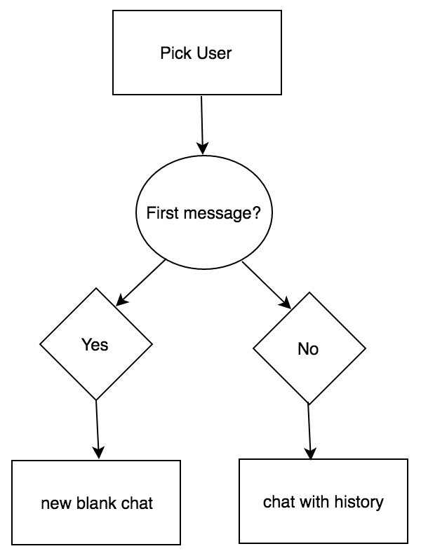

BESS React Native App


Figure 1: iOS and Android Screenshot of app design
Purpose
Design a mobile app that would unify member communication into a central place while fostering a sense of community.
Technologies Used
- React Native - for iOS and Android Front End
- JavaScript - for application logic
- Firebase - for realtime backend database
- Redux - for application state management
- GitHub - for version control
Challenges
When initially designing this app I only had experience developing mobile apps for android but a large part of our members had iOS and a small portion had Windows phones. I did some research into hybrid mobile app platforms and came across ionic which was used in the first iteration of this app but I have since transitioned to React Native which is a more native experience. Learning these two platforms on my own was a bit of learning curve because I needed to improve my JavaScript skills and learn a new version of Firebase.
The biggest challenge for me in making this app was the real time chat. At first you might think it's pretty straightforward, you select a person you want to chat with and open a new chat dialogue with the person. But what about chat history,how the data is organized, the interaction where each new message gets added to the bottom of the screen and the rest scrolls up or the fact that there are about 5 entry points in total for private and group chats.
Gotcha's that I ran into and how I fixed them:
-
Real Time Messaging: When you send a chat message someone you expect them to receive it instantaneously. In order to get that same experience in the app I decided to use Firebase's realtime database which allows me to create a "socket" that users can be attached as a listener to so they can send and receive messages in real time.
-
Routing: When you think of any popular messaging app there are multiple ways to start a new chat and there are two different types 1-on-1 and groups. For a 1-on-1 chat the flow usually goes:
Figure 2: 1-on-1 chat flow
The user can get to the chat by either creating a new chat or clicking on an existing chat in the main view. Both of these entry points require that we first check the database to check if the chat exists, if it does we can get the chat history and display it to the user and if it doesn't we create a new blank chat for them to send their first message. So the database needed to be structured in a way that allows for quick checking if a chat for the two people is already present and fetch its history if it is.
-
Structuring Data: The problem at hand is how should I structure my noSQL database in a way that would allow me to quickly determine all the chatrooms a user is in, whether or not a chat had already been started with a specific user and show chat history. The list below shows what the optimal data structure would allow me to do.
- 1. Find all the chat rooms a user is a part of
- 2. Find the past messages of a chat
- 3. Allow the user to create a new group chat
- 4. Allow the user to create a new 1-on-1 chat
chats: { randomkey1: { groupName: 'Party' members: { userid1: { name: 'Mary Lou' } userid2: { name: 'John Snow' } messages: { randomMessageKey: { id_: 4545235 createdAt: 245242542 text: 'Where is the party tonight?' uid: NFEI45DJ4L4K44Y3 } } } randomkey2: { members: { userid1: true userid2: true messages: { randomMessageKey: { id_: 6756756 createdAt: 10685454 text: 'Hi John, how are you!' uid: NFEI45DJ4L4K44Y3 } } } } users: { userid1: chats: { chatid1: { id: 49nrjwl490 name: 'Party' type: 'group' } chatid2: { id: 0960eflwgf name: 'Tom Doe' type: 'one' } } email: 'john@snow.com' name: 'John Snow' uid: 9934er38fh43 } -
User Interface: At first I had a very basic list style interface for chat messages with no fancy chat bubbles and once I got the basic functionality working I switched over to an open source library called gifted-chat that gave me the basic ui I needed to then build on top of and adapt to fit my app style.
Next Steps
Now that the app has basic functionality implemented (i.e adding events, and news posts) the next step is to add the ability to send push notifications to everyone who has the app installed in addition to a targeted population like all the freshman or the executive board members. I also need to obtain apple and android developer licences to deploy the app to the app stores.